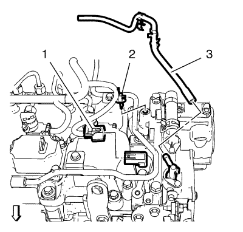
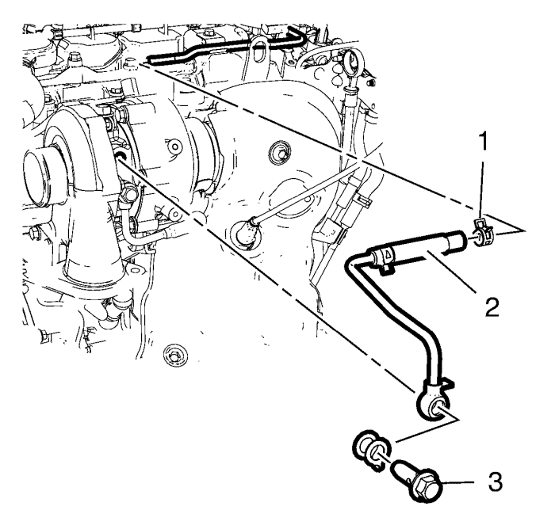
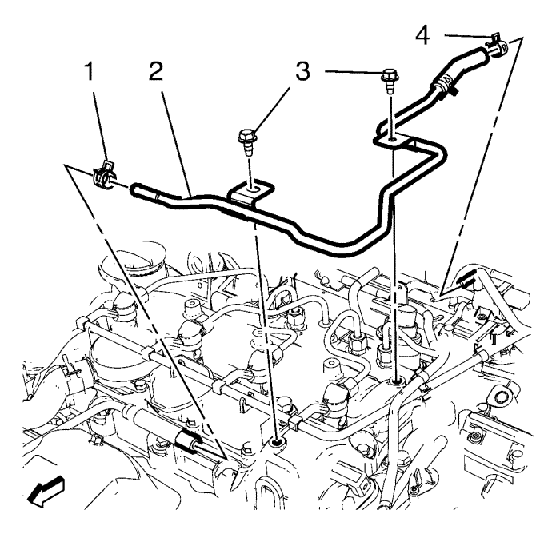

Suelte el tubo flexible de retorno de combustible de la inyección de combustible (2) de la válvula de ventilación positiva de la carcasa del cigüeñal.
Suelte el tubo flexible de retorno de combustible de los 2 clips de retención.
Retire el tubo flexible de retorno de la inyección de combustible (1) de la bomba de inyección de combustible (2) y de las válvulas de inyección de combustible (3).
Retire el tubo flexible de retorno de combustible de la inyección de combustible (1).

Suelte y retire el tubo flexible de depresión (3) de la bomba de vacío.
Desconecte el enchufe del mazo de cables del sensor de posición del árbol de levas (1).
Suelte el clip de retención del mazo de cables del sensor de posición del árbol de levas (2) y cuelgue a un lado el mazo de cables.

Retire el perno hueco (3) del turbocompresor.
Retire la abrazadera (1) de la tubería delantera de retorno de refrigerante del turbocompresor (2).
Retire la tubería delantera de retorno de refrigerante del turbocompresor (2).

Retire la abrazadera (4) de la tubería trasera de retorno de refrigerante del turbocompresor (2).
Retire los 2 tornillos (3) de la tapa del árbol de levas.
Retire la tubería trasera de retorno de refrigerante del turbocompresor (2).
Monte los 2 tornillos del soporte del tubo de retorno de refrigerante del turbocompresor (3) y apriételos a 10 N·m (89 lib. pulg.).
Monte las 2 abrazaderas (1, 4) en la tubería trasera de retorno de refrigerante del turbocompresor (2).
Monte la tubería de retorno de refrigerante del turbocompresor (2).
Monte el tornillo hueco (3) en el tubo de retorno de refrigerante del turbocompresor (2) con una junta NUEVA y apriételo a 32 N·m (24 lib. pie).
Monte la abrazadera (1) en la tubería de retorno de refrigerante del turbocompresor (2).
Fije el clip de retención del mazo de cables del sensor de posición del árbol de levas (2).
Conecte el enchufe del mazo de cables del sensor de posición del árbol de levas (1).
Monte el tubo flexible de depresión (3) en la bomba de vacío y fije con clips el seguro del tubo flexible de depresión.
Monte el tubo flexible de retorno de combustible de la inyección de combustible (1) en la bomba de inyección de combustible (2) y las válvulas de inyección de combustible (3).
Fije el tubo flexible de retorno de combustible a los 2 clips de retención.
Fije con clips el tubo flexible de retorno de combustible de la inyección de combustible (2) a la válvula de ventilación positiva de la carcasa del cigüeñal.